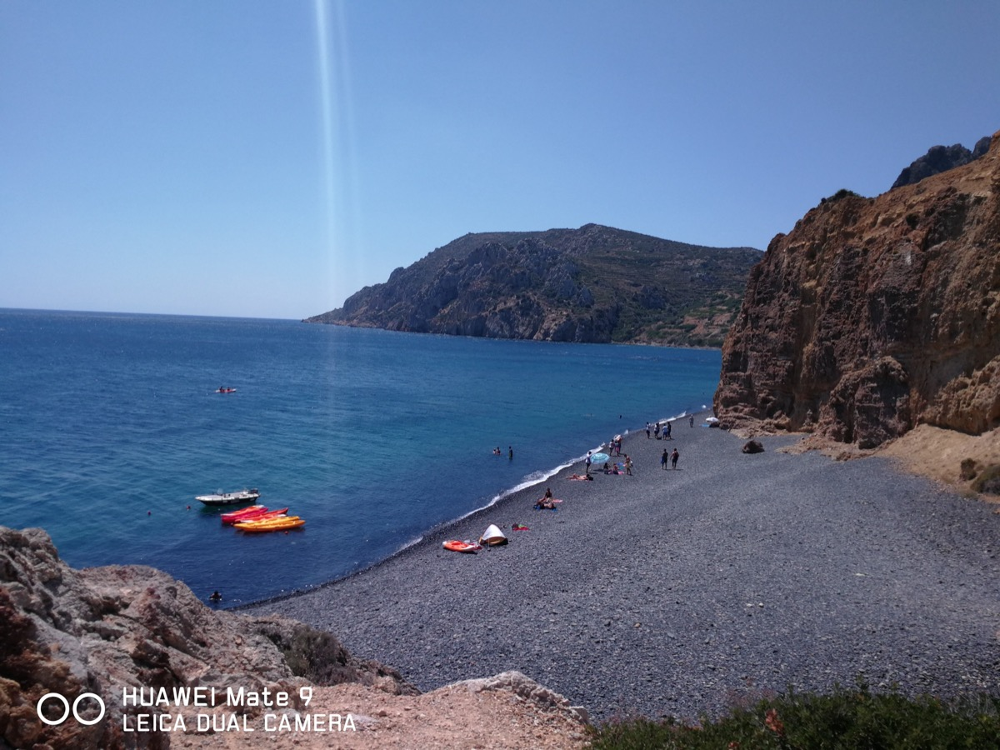

Adanın plaj seçenekleri, kalabalık turistik adalara göre çok daha sakin ve doğal. İşte Sakız Adası'nın mutlaka görülmesi gereken koyları.
Mavra Volia — Siyah Çakıl Plajı

Volkanik siyah çakıl taşları ve berrak turkuaz suyuyla adanın en ünlü plajlarından. Fotoğraf tutkunları için kaçırılmaması gereken bir nokta.
Komi Plajı
Geniş kumsalı, sığ girişi ve aile dostu yapısıyla rahat bir gün geçirmek isteyenler için uygun. Çevresinde restoran ve şezlong seçenekleri mevcut.
Agia Fotini & Karfas
Sakız şehrine yakınlığı sayesinde kısa sürede ulaşılabilecek plajlar. Karfas aynı zamanda gece hayatı ve su sporlarıyla da öne çıkıyor.
Lithi Plajı
Adanın batı kıyısında, gün batımını izlemek için harika bir nokta. Akşamüstü buradaki tavernalardan birinde oturup günbatımını izlemek unutulmaz bir deneyim.